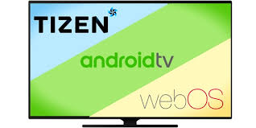
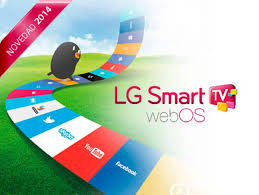
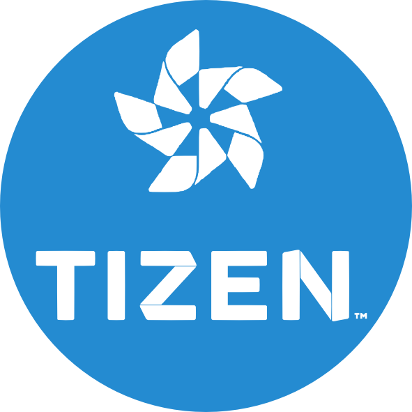
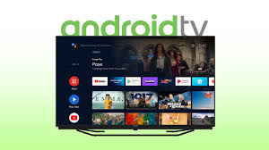

Un sistema operativo es el conjunto de programas de un sistema informático que gestiona los recursos del hardware y provee servicios a los programas de aplicación de software.
Smart(S.O.)
Un sistema operativo para Smart TV es un software integrado que permite a los televisores inteligentes ejecutar aplicaciones, acceder a servicios de streaming, navegar por Internet y ofrecer funciones interactivas. Ejemplos incluyen webOS, Tizen y Android TV.


WEB OS
Utilizado por LG, conocido por su diseño elegante y fácil navegación.

TIZEN
Utilizado por Samsung, ofrece una interfaz sencilla y una amplia selección de aplicaciones

ANDROID TV
Basado en Android, ofrece un ecosistema de aplicaciones amplio y compatibilidad con dispositivos Android.